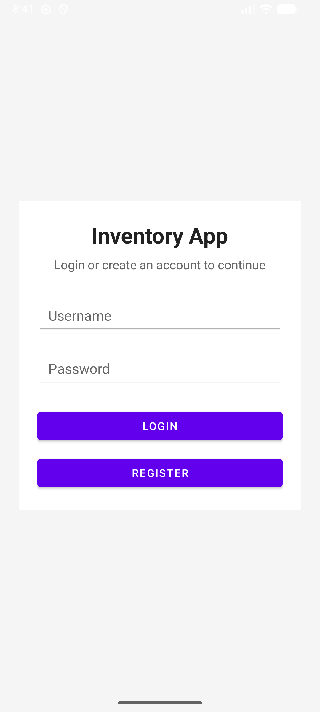
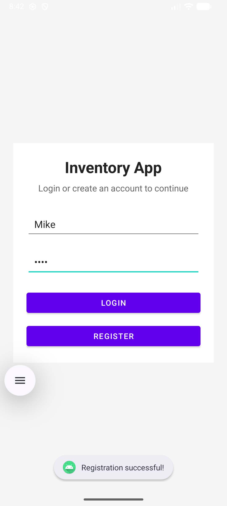
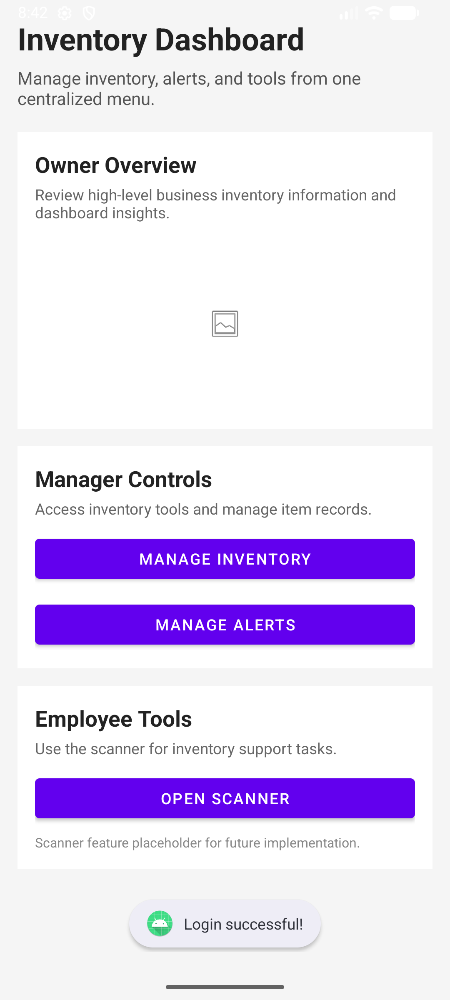
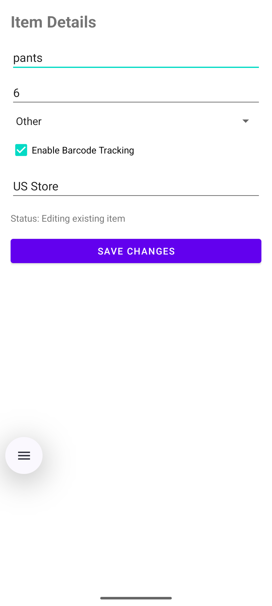
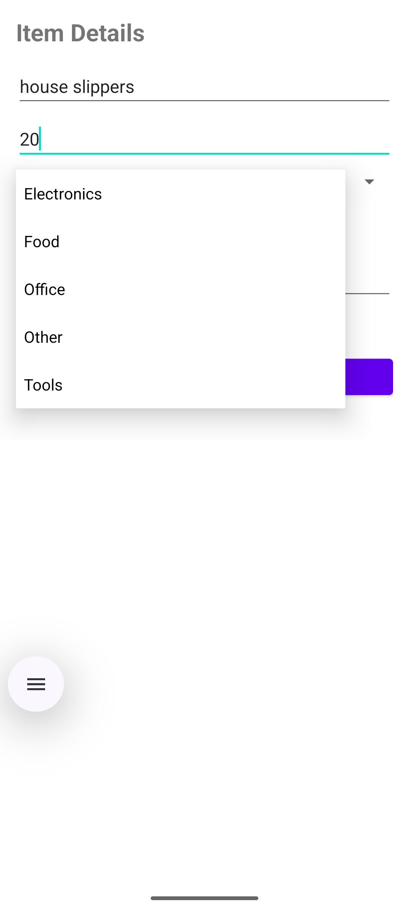
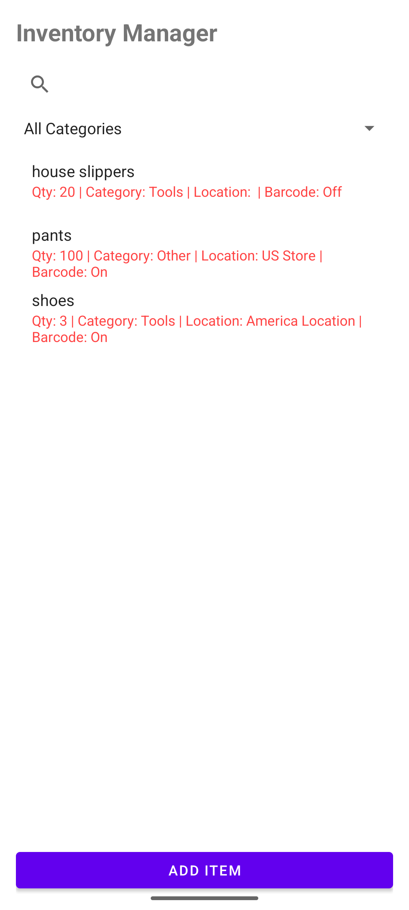
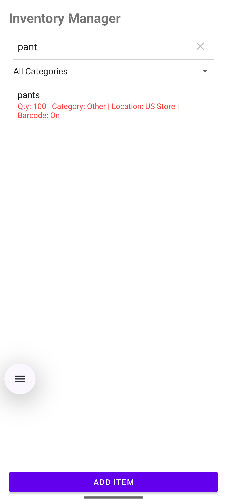
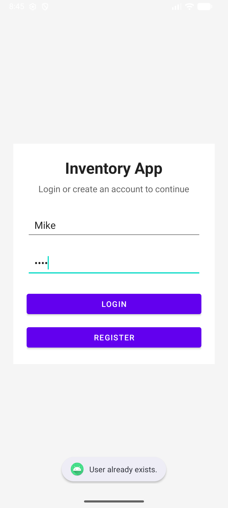

This project was enhanced as part of my CS 499 capstone to demonstrate growth in software design and engineering, algorithms and data structures, and database design. The application supports item creation, editing, search, category organization, and inventory tracking while showing how I improved architecture, performance, and data management throughout the enhancement process.
This application began as a basic Android inventory system and was later expanded into a more complete and structured capstone artifact. The enhanced version improves usability, better separates responsibilities across the application, and supports more scalable data handling. Through these revisions, the project demonstrates my ability to refine an existing system instead of simply building something new, which better reflects real-world software development.








The code review provides a walkthrough of the original application and identifies the areas that needed improvement before enhancement work began. In that review, I focused on UI limitations, weak separation of concerns, and opportunities to improve how the application stored and retrieved data. It also established a clear enhancement plan, showing how each revision would connect back to the program outcomes and demonstrate measurable technical growth across the capstone.
For the software design and engineering enhancement, I improved the structure of the application so responsibilities were more clearly divided between the interface, user interaction logic, and database operations. One important change was removing direct database work from the RecyclerView adapter, which made the code easier to maintain and reduced tight coupling between components. I also improved validation and error handling so the application behaves more reliably during user input and item updates. These changes made the project feel less like a classroom prototype and more like a real application built with maintainability and long-term growth in mind.
For the algorithms and data structures enhancement, I focused on improving how inventory data is searched, filtered, and organized within the application. The updated version supports more efficient item lookup and cleaner handling of user actions such as live search and category-based filtering. I also refined the flow of data so that retrieval is more direct and easier to manage as the number of items grows. This enhancement shows my understanding of how design decisions around data structures and query patterns can directly affect application responsiveness, scalability, and the overall user experience.
For the database enhancement, I redesigned the original storage model into a more normalized structure by separating items and categories into related tables rather than keeping everything in a flatter format. I added indexes to support faster searching and retrieval, and I introduced additional fields such as location and barcode support to better reflect real inventory use cases. These revisions improved both data integrity and flexibility, while also making the application more realistic from a business and technical perspective. This category highlights my ability to build database solutions that are not only functional, but also more efficient, scalable, and aligned with good design practices.